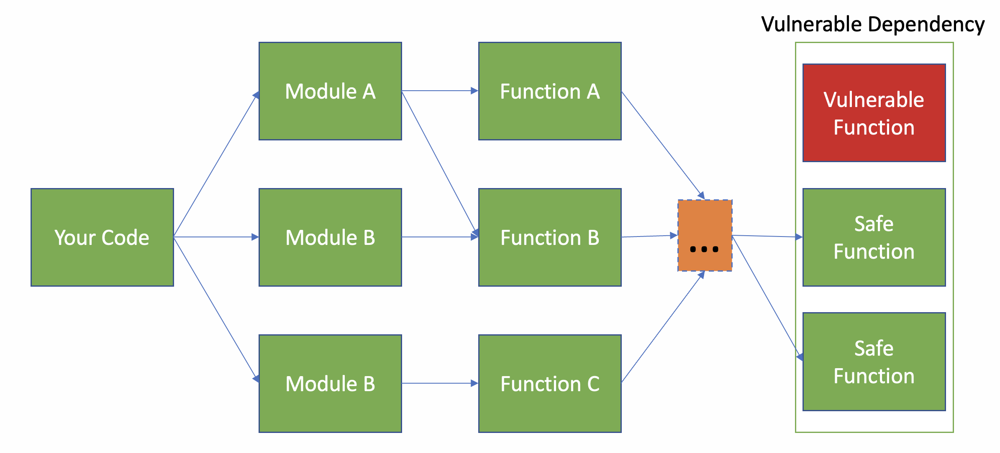
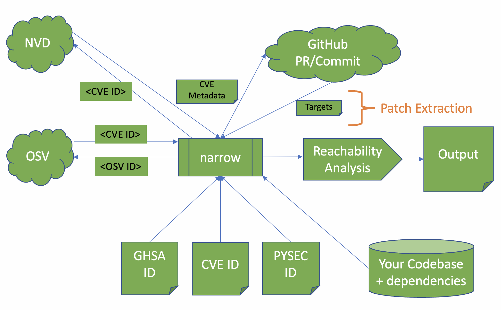

Introduction
In this post I'm going to (finally) write about some really cool research I was fortunate to work on at Cisco: narrow.
In short, narrow is a software composition analysis tool for python programs that uses program analysis to automatically determine what subset of
vulnerable dependencies are most likely to
actually affect you, thereby greatly improving the prioritization process.
If you're interested, the work is completely open source and can be obtained here:
https://github.com/duo-labs/narrow
Software Composition Analysis
It's 2023 and we have a lot of SCA tools. We hear about it so much, you might be tired of it. However, even given all the hype we're still struggling as an industry to manage it.
For example, back when I worked at Cisco we did a couple experiments and found that less than half of reported vulnerabilities in third-party components actually posed any relevant threat to us.
This was not really an uncommon finding and many others have reported similar values.
Why is so much of this irrelevant?
Answer: Even if all the reported components are correct (i.e., used by your program) that doesn't mean all the *code paths* are used.
Example: CVE-2022-21716 only affects your use of Twisted if you're using the SSH features of Twisted. Many users are not.

Rise of Static Analysis
How are we going to fix this? Answer: program analysis.
We're increasingly seeing tools that use control flow analysis to improve findings. e.g.
Semgrep Supply Chain,
govulncheck, among others.
However, they have their own issues. They usually require either:
-
Additional metadata associated with vulnerabilities in databases (the govulncheck case)
-
Manually created rules to indicate "targets" (the semgrep case)
This is problematic because both have scaling challenges to varying degrees. In the former you need to ensure that every vulnerability is supplemented with exploitation information
(most CVEs do not have this) or you need to manually write detection rules (which usually only address high-profile vulnerabilities).
Enter: narrow
Narrow addresses these problems by taking a third approach that requires no manual intervention. It is based off the following key insight:
Given a valid fix for some vulnerability,
At least one modified function must used in the exploit chain.
∴
If your program can't reach any of the modified functions,
the vulnerability must not affect you.

Narrow works by combining two processes:
- Patch extraction: Narrow automatically examines NVD, OSV, or other vulnerability databases and follows links to fixes for those vulnerabilities.
It then collects the set of functions modified by the fix.
-
The Talk
I was given the amazing opportunity to present narrow at OWASP AppSec Global in Dublin in 2023. If you'd like to watch the video version of this article, take a look below:
Recording:
YouTube Link